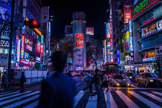
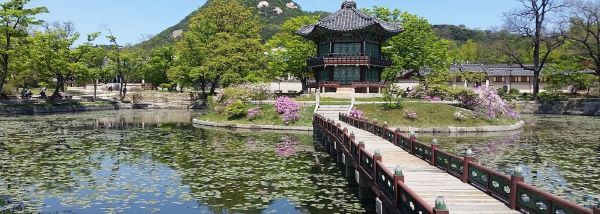
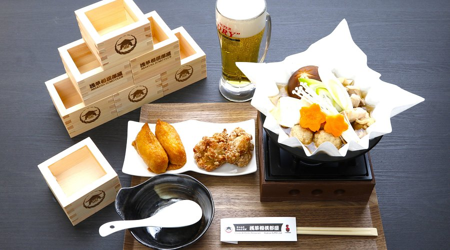
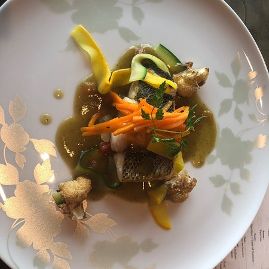
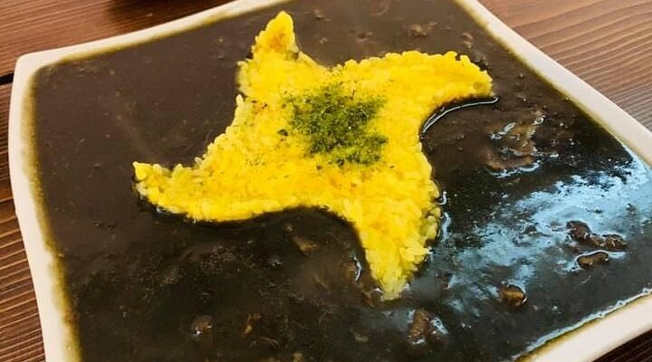

Viaja a Tokio, destino turístico número 1 entre nuestros clientes.
O prueba nuestro segundo destino turístico, Seúl.
Otros de nuestros destinos más populares:
Planifica y reserva tu próximo viaje aquí.
| Precio | ||||
|---|---|---|---|---|
| Tokio | Bogotá | Kuala lumpur | Nairobi | |
| Visitas a museos | 10€ | 6€ | 52€ | 10€ |
| Tours guiados | 48€ | 8€ | 58€ | 11€ |
| Espectaculos | 54€ | 7€ | 65€ | 12€ |
No te pierdas los consejos más importantes a la hora de viajar a Japón.
O bien no dudes en descargar nuestra guía de viaje.
| Línea | Origen | Destino | Horario de inicio | Horario de fin | Frecuencia |
|---|---|---|---|---|---|
| A | Estacion | Akihabara | 8:00 am | 20:00 pm | 10 min |
| B | Estacion | Parque Ueno | 9:00 am | 21:00 pm | 5 min |
Visita los mejores restaurantes de Tokio.
| Nombre | Tipo de cocina | Precio promedio | Calificación | Plato estrella |
|---|---|---|---|---|
| Chanko & Wanko Restaurant Asakusa Sumo Club | Japonesa | 175€ | 5 estrellas |  |
| Sky Restaurant 634 (Musashi) | Japonesa | 100€ | 4,5 estrellas |  |
| Ninja Experience Cafe Harajuku | Japonesa | 75€ | 5 estrellas |  |
Si tienes alguna duda o pregunta no dudes en contactar con nosotros.